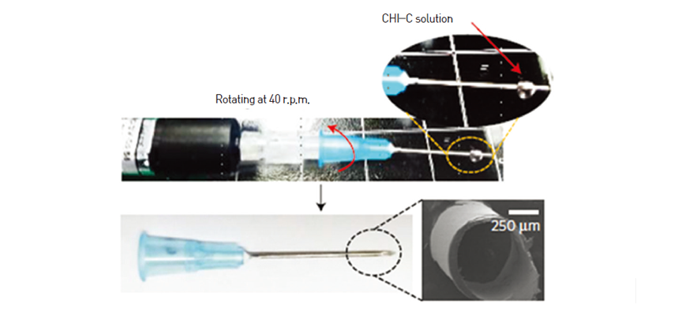
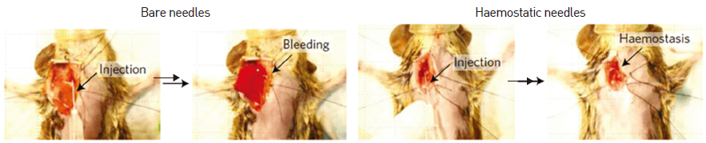

연구성과 10선
연구성과 10선
KAIST RESEARCH ACHIEVEMENTS
찔러도 피가 나지 않는
무출혈 주사바늘
화학과 이해신
요약
주사바늘은 일반국민들이 년평균 20개 이상 사용하는 대표적 의료기기로, 약물주사, 링거, 진단 (diagnosis), 성형수술을 포함하는 일반 수술에 필수적으로 사용되는 의료기기이다. 주사바늘을 찌르고 빼면 반드시 출혈을 동반하게 된다. 일반적으로 건강한 사람의 경우는 지혈이 잘 이루어지지만, 선천적으로 혈관이 약한 사람, 당뇨병 환자, 암환자, 혈우병 환자 등은 주사기 사용 후 발생하는 출혈이 지혈 되지 않아 심각한 문제가 발생하기도 한다. 본 연구는 주사바늘에 self-sealing이 되는 지혈제를 코팅하여 찌른 후에도 전혀 피가 나오지 않게 되는 주사바늘을 개발한 내용이다.
연구배경
 키토산-카테콜 접합체 지혈바늘
연구배경
본 연구에서 혈관 sealing 고분자 물질로 홍합모사 접착고분자인 키토산-카테콜 접합체 (chitosan-catechol)를 사용하였다. 이 물질은 특이하게도 1) 그 자체적으로는 접착력이 존재하지 않고, 혈액성분과 만났을 때만 끈적끈적한 접착제로 그 물리화학적 성질이 급격하게 변화하며, 2) 키토산-카테콜 접합체는 공기 중에서 말리게 되면 접착력이 나타나지 않는 형태로 얇은 투명한 비닐막과 비슷한 형태로 바늘 표면에 균일 하게 붙어있게 된다. 앞에 설명한 1)과 2)를 요약하면 비닐과 같은 매우 얇은 투명물질이 혈액에 닿게 되면 급격히 물성이 변화하여 접착제로 바뀌게 되고, 이때 주사바늘을 몸에서 빼게되면 self-sealing성질이 생겨 뚫려있는 구멍을 막아주게 된다. 본 연구에서는 self-sealing된 본 지혈막이 일부의 물질이 자체적으로 떨어져 나가서 다른 혈관을 막지 않는다는 사실과, 더불어 이 물질이 혈관독성을 보이지 않는다는 사실을 같이 보고 하였다. 혈우병을 가지고 있어 조그마한 상처가 나도 피가 멎지 않아 죽게 되는 쥐 모델로 실험을 한 결과, 일반 바늘로는 100% 죽게 되는 쥐가 본 개발된 지혈바늘로 injection을 하는 경우 100% 살아 있는 정반대 결과를 얻게 되었다. 현재 안전성 실험을 추가로 진행하고 있고, 빠르게 2017년 중에 보건복지부 허가를 받을 수 있을 것으로 기대된다.
 혈우병 쥐 정맥출혈 모델에서 생체 내 지혈효과
우수성과 및 기대효과
- 피가 잘 멎지 않는 delayed hemostasis를 보이는 당뇨환자(한국 전체인구의 약 7%)에게 무출혈 주사바늘을 적용함으로써 신속한 지혈효과 기대
- 암환자 진단에 필수적인 조직검사용 바늘에 적용하여 조직검사 시 발생하는 다량출혈을 막는 hemostatic needle로적용할 예정. 국내 뿐 아니라 세계적인 의료기기로 성장가능성 기대
참고자료
[기사1] Holotomography Unlocks New Potential for Life Sciences Research, Photonics MEDIA, http://www.photonics.com/Article.aspx?AID=60967